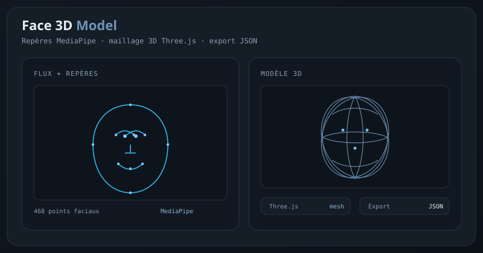
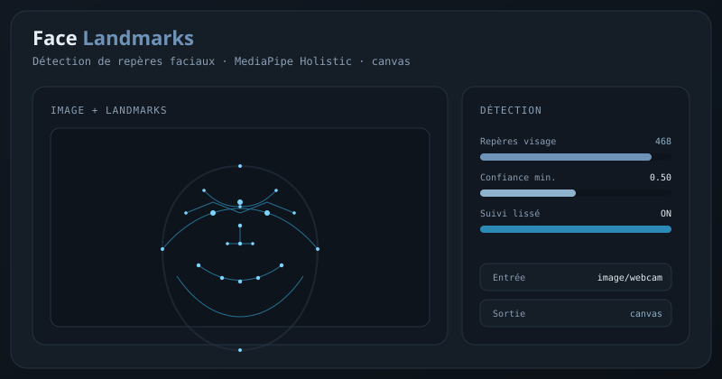

Baseball Tensor
Classification des lancers MLB (Statcast) par réseau de neurones : entraînement, visualisation 3D des trajectoires et inférence interactive.
Ouvrir →TENSORFLOW.JS — APPRENTISSAGE & INFÉRENCE
Expériences de machine learning interactives, en local dans le navigateur. Entraînez, visualisez et prédisez en temps réel.
Voir les applicationsCHOISISSEZ UNE APPLICATION
04 APPS DISPONIBLES
Classification des lancers MLB (Statcast) par réseau de neurones : entraînement, visualisation 3D des trajectoires et inférence interactive.
Ouvrir →
Indice Fear & Greed, graphiques horaires/journaliers/hebdomadaires, entraînement et prévisions de prix BTC avec TensorFlow.js.
Ouvrir →
Modélisation faciale 3D en temps réel : repères MediaPipe Holistic, visualisation Three.js et export du modèle.
Ouvrir →
Détection de repères faciaux sur image ou webcam avec MediaPipe Holistic, affichée directement sur canvas.
Ouvrir →COMPRENDRE
L'analogie de la table de mixage, du contrôle surprise, et du code If/Else.
Explications claires, imagées et intuitives des briques motrices de TensorFlow.js.